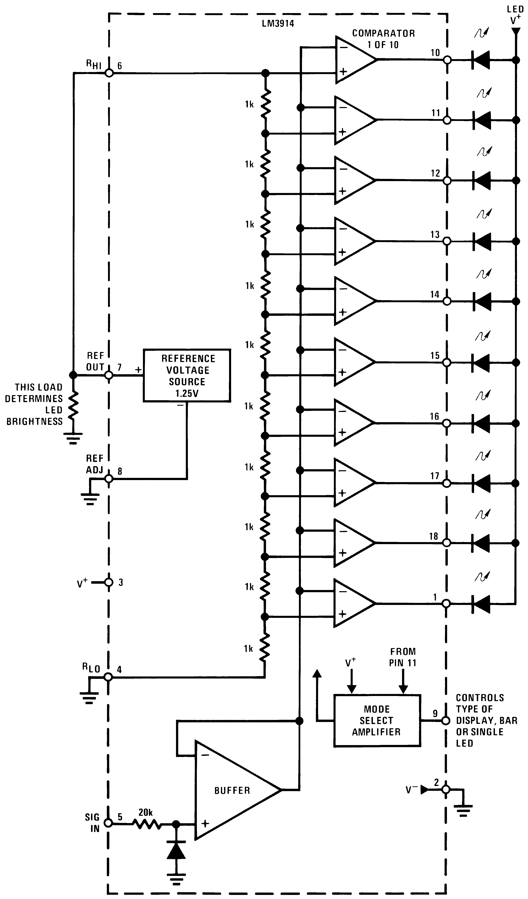
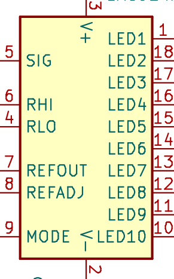

LM3914
 
RLO
If we want the lowest measured voltage to be 0V, connect pin 4 to ground.
If we want the lowest measured voltage to be higher than 0V, connect pin 4 to a voltage divider.
Category
Follow Me